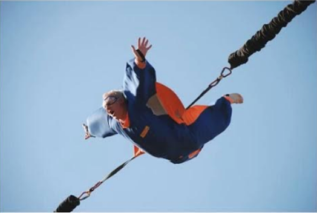

Pasi-Anssi

Pasi-Anssi tykkää pelata shakkia, pelata Jalkapalloa ja katsella Games of Thronesia
Yhteystiedot
Pasi-Anssi PassinenPasilan puistotie 33 B 44
040-123 4567
pasi-anssi.passinen@edu.keuda.fi

Pasi-Anssi tykkää pelata shakkia, pelata Jalkapalloa ja katsella Games of Thronesia